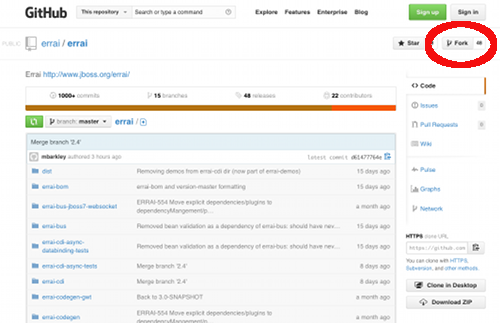
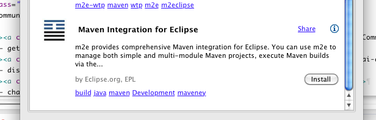

1. Fork the Errai repository on Github
Navigate to the Errai project on Github and press the Fork button. This will create your own public copy of the Errai project on Github, which will be required when you send us your great changes in the form of pull requests!

The Fork button is near the top right corner of the page
2. Get Eclipse
If you already have Eclipse Juno or Kepler, you can skip this step.
Otherwise, head to the Eclipse Download Site and grab the latest release of Eclipse IDE for Java EE Developers.
When the download completes, install it using the usual Eclipse installation procedure for your platform.
4. Ensure your Eclipse has m2e
Eclipse comes with all the components you need to import and build the Errai framework, except one: m2e, or Maven Integration for Eclipse.
To install m2e, go to Help → Eclipse Marketplace... within Eclipse and search for "m2e" in the dialog that pops up:

Install this add-on: Maven Integration For Eclipse, by Eclipse.org
5. Clone your fork
Now you need to copy your fork of Errai to your own computer.File → Import → Existing Maven Projects...
Fix up build failures
With Build Path → Use as Source Folder or Build Path → Exclude